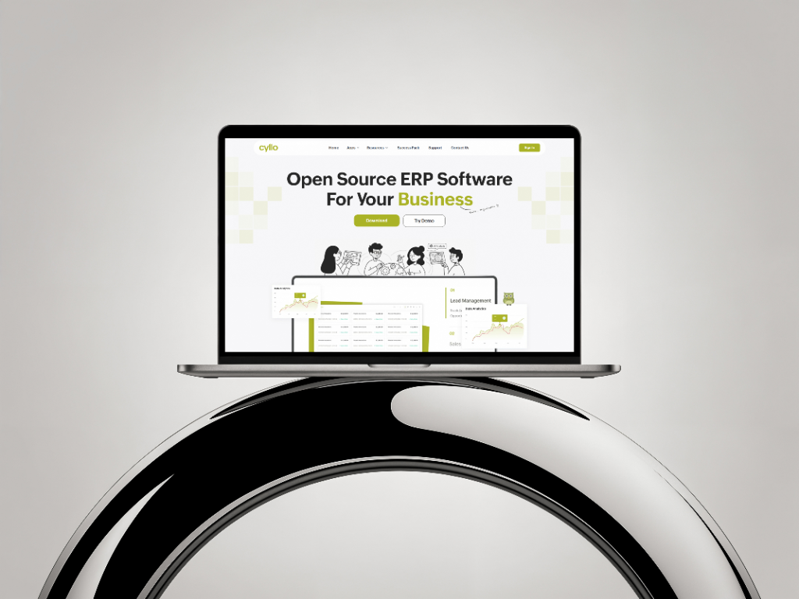

Overview
Cyllo is an open-source ERP platform that brings different business operations together in one connected ecosystem, including Cyllo AI.
I worked on the overall Cyllo website, focusing on presenting its capabilities through a clear, professional, and approachable digital experience.
Background
Cyllo brings together multiple business functions, making it important to communicate its capabilities without overwhelming visitors.
My focus was to create a website that helps users understand the product through clear content and a consistent visual direction.
Design Approach
I collaborated with the Cyllo team and developers to understand the product before designing the website.
I focused on clear hierarchy, structured content, generous spacing, and restrained motion to create a calm and intuitive experience.
Cyllo AI & Cloud
I worked on presenting Cyllo AI within the broader product experience and extending the visual direction to Cyllo Cloud, which was in development.
Challenges
Communicating Complexity
Presenting multiple ERP capabilities clearly without making the website feel information-heavy.
Visual Balance
Creating a professional yet approachable experience with a clear visual hierarchy.
Content Structure
Organizing product information into a natural flow so visitors can understand the platform more easily.
Outcome
The website brought Cyllo’s different capabilities together through a consistent visual language, clear content structure, and an approachable presentation.
What I Learned
Cyllo helped me understand how visual hierarchy, content structure, and thoughtful design can make complex products easier to understand.